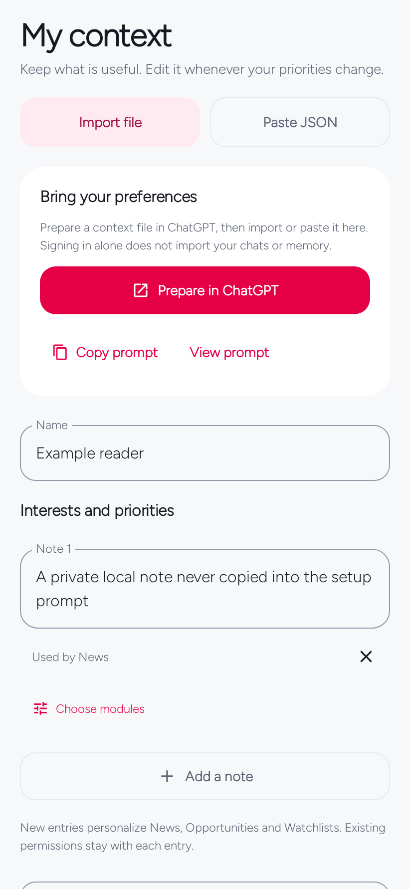
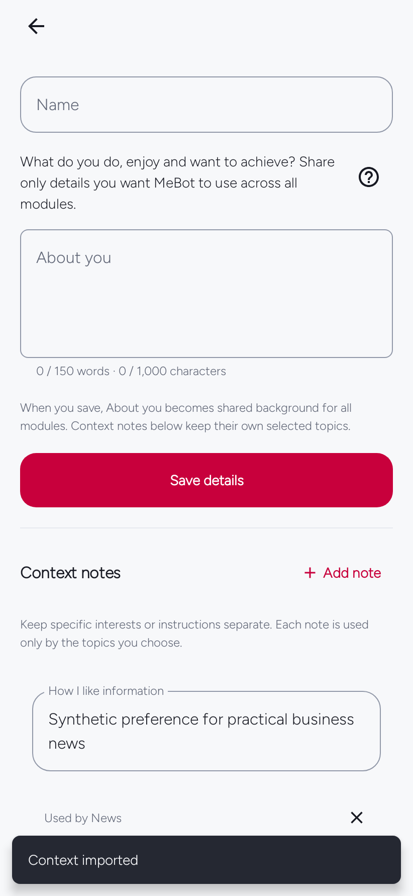

Start here
Your personal context
Give MeBot a small, reviewed set of interests, preferences, and goals. You decide which module kinds may use each note.
In the appYou → My context
On this page
Choose how to add context
Import, paste, preparation prompt, notes, region, timezone, and export are together on My context. No Advanced settings step is required.
You can start by writing one useful note directly, or prepare a compatible JSON file in ChatGPT. The app does not automatically read ChatGPT memory or conversation history after sign-in.


Prepare a context file in ChatGPT
- Tap Prepare in ChatGPT. MeBot copies a generic preparation prompt and opens
chatgpt.com. It does not submit the prompt or copy your existing notes. - Paste and send it in a conversation that has useful information about you. Available memory depends on that ChatGPT conversation and your account settings.
- Read the returned JSON. Remove incorrect, outdated, overly private, or unnecessary details.
- Return to MeBot and choose Import file, or Paste JSON → Review import.
- Review the replacement summary and confirm. Then review the notes and their module permissions.
Create mebot-context.json for MeBot using only facts and preferences you reliably know about me from this chat or available saved memory. Do not guess, include secrets, or expose other people's private details. Prefer current information; leave unknown profile fields empty. Return a downloadable JSON file or raw JSON without Markdown. Use this schema:
{"format":"mebot-context-v1","name":"","region":"","timezone":"","entries":[{"id":"preference-1","text":"Replace with one reliable preference about me.","category":"preference","scopes":["news"],"confirmed":true,"origin":"imported","updatedAtMillis":0}],"modules":[]}
Replace the example entry. Use unique ids, concise text (maximum 1000 characters per entry), category interest/preference/goal, confirmed:true, and only relevant scopes from: business, entertainment, events, github, horoscope, learning, media, music, news, opportunities, scholarships, science, security, technology, travel, watch, weather. Keep modules:[] to preserve my module choices. If nothing reliable is available, leave entries empty. I will review the file before importing it.The in-app Copy prompt and View prompt actions also work before connecting AI. A complete ChatGPT export ZIP is not a MeBot context file.
Control which modules use a note
For a manual note, enter one interest, preference, or goal, select Choose modules, and finish with Save context. Used by shows its approved kinds. New manual notes initially target News, Opportunities, and Watchlists; narrow or change that selection.
Only confirmed notes relevant to a request’s module kind are included. General AI conversations start without saved personal notes. Module preferences and default guidance do not grant access to additional notes.
Watchlist scope is shared.
All custom Watchlists use the watch kind. A note approved for Watchlists can be used by each custom watch; it is not restricted to one named topic.
Up to 80 notes are supported, with at most 1,000 characters each. A module request includes at most 32 relevant confirmed notes. Keep each note focused so the important preferences remain useful.
Review imports before replacing data
Context import replaces your profile and notes.
It does not merge them. Export your existing context first if you want a recoverable copy. A nonempty modules array also replaces module settings; modules: [] preserves the current choices and order.
Context-only import preserves the current AI connection, saved reading, and local tools. Invalid input or cancelling the review leaves current data unchanged.
Use the mebot-context-v1 format. Files may be at most 512 KiB; the paste editor accepts up to 131,072 characters, as raw JSON or one enclosing Markdown code fence with no language label or the label json. A blank timezone uses the device timezone; an explicit value must be a valid IANA zone such as Etc/UTC.
After import, see your saved notes
In MeBot 0.9.4, confirming a reviewed import returns to You → My context and shows the notes that were saved. You do not need to leave the screen and reopen it to check the result. Cancelling the review or correcting an invalid file leaves your current draft intact.


If you are still on 0.9.3 and a successful import leaves you on the import flow, check You → My context before repeating the import. The notes may already be saved.
Keep recommendations relevant
Use current, concrete preferences: the subjects you follow, language, broad region, work interests, or a learning goal. Do not include credentials, confidential documents, or someone else’s private information.
A note about one topic usually belongs with only the relevant modules. Then refine the module’s own focus and preferences. If a recommendation misses, adjust the confirmed note or module setting instead of adding a long biography.
Local feed ordering may use approved preferences and optional reading history. The optional 0.9.4 AI story-fit helper uses only confirmed in-scope notes and explicit relevance feedback, not passive reading history. It is a qualitative hint, not a calibrated probability. MeBot does not infer a qualification, budget, subscription, precise location, or eligibility you have not provided. Treat dates and requirements as details to verify at the linked source.
Updated for MeBot 0.9.4. Older screen examples use synthetic host-test fixtures. See the verification record for what was tested and the remaining device/provider checks.